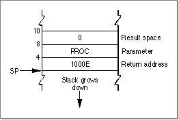
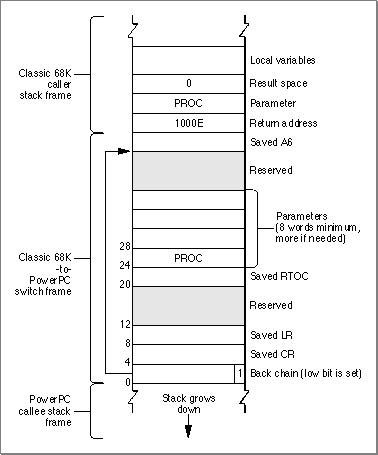

Legacy Document
Important: The information in this document is obsolete and should not be used for new development.
Important: The information in this document is obsolete and should not be used for new development.


Calling PowerPC Code From Classic 68K Code
This section describes how the Mixed Mode Manager switches modes from the classic 68K emulated environment to the PowerPC native environment. This can happen when classic 68K code calls a system software routine or plug-in that is implemented in the PowerPC instruction set.Suppose that a classic 68K application calls a PowerPC routine. The application is not aware that it is running under the 68LC040 Emulator, so it just pushes the routine's parameters onto the stack (or stores them into registers) and then jumps to the routine or calls a trap that internally jumps to the routine. If the routine exists as classic 68K code, no mode switch is required and the routine is called as usual. If, however, the routine exists as PowerPC code, the calling application must implicitly invoke the Mixed Mode Manager.
If the calling application merely jumps to the PowerPC code, the code must begin with a routine descriptor, as explained in "Accelerated and Fat Resources," beginning on page 7-4. If the calling application calls a trap, the trap dispatch table must contain--instead of the address of the routine's executable code--the address of a routine descriptor for that routine. This routine descriptor is created at system startup time.
For example, suppose that your application calls the
CountResourcesfunction, as follows:
myResCount = CountResources('PROC');Suppose further thatCountResourceshas been ported to the PowerPC instruction set. When your application callsCountResources, the stack looks like the one shown in Figure 6-2.Figure 6-2 The stack before a mode switch

The trap dispatcher executes the
CountResourcesroutine descriptor, which begins with an executable instruction that invokes the Mixed Mode Manager. The Mixed Mode Manager retrieves the transition vector and creates a switch frame on the stack. A switch frame is a stack frame that contains information about the routine to be executed, the state of various registers, and the address of the previous frame. Figure 6-3 shows the structure of a classic 68K to PowerPC switch frame.
Figure 6-3 A classic 68K to PowerPC switch frame
- Note
- In Figure 6-3 the low bit in the back chain pointer to the saved A6 value is set. This bit signals to the Mixed Mode Manager that a switch frame is on the stack. The Mixed Mode Manager fails if the stack pointer has an odd value.


In addition to creating a switch frame, the Mixed Mode Manager also sets up several CPU registers:
At this point, it's safe to execute the native
- The PowerPC base register (GPR2) must be set to the direct data area of the fragment containing the
CountResourcesroutine. This value is obtained from the transition vector whose address is extracted from the routine descriptor.- The Link Register (LR) must be set to point to code that cleans up the stack and restarts the emulator.
CountResourcescode. WhenCountResourcescompletes, the Mixed Mode Manager pops the return address and parameters off the stack (sinceCountResourcesfollows Pascal calling conventions). The GPR2, LR, and CR are restored to their saved values, and the switch frame is popped off the stack. The Mixed Mode Manager then jumps back into the 68LC040 Emulator, and the application continues execution.